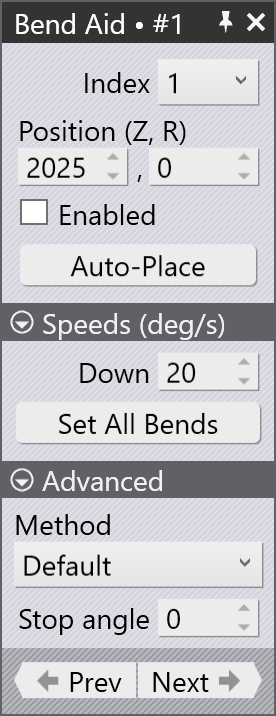

Bending Aids
Bending Aids to komponenty prasy krawędziowej, które pomagają w gięciu grubszych blach. Są zaprojektowane tak, aby zapewnić dodatkowe wsparcie i kontrolę podczas procesu gięcia, zapewniając dokładne i spójne rezultaty.
Prasa krawędziowa może mieć zainstalowane wiele bending aids lub pojedynczy bending aid, w zależności od konkretnych wymagań operacji gięcia.
| Bending aids są stosowane tylko dla serii TruBend 5000 i 8000. |

Konfigurowanie Bending Aids
Bending Aids można skonfigurować w Database / Machines / Settings.

Gdy detal jest importowany i wybierana jest maszyna z bending aids, TecZone Bend automatycznie konfiguruje bending aids na podstawie wymagań detalu.
Używanie Bending Aids
Po wygenerowaniu możliwego do wykonania rozwiązania gięcia, bending aids można dodatkowo dostosować, aby zoptymalizować proces gięcia.
Kliknij bezpośrednio na bending aid w TecZone Bend, aby otworzyć panel Bend Aid. Numer w panelu bend aid reprezentuje sekwencję gięcia.

-
Index - Oznacza aktualnie wybrany bending aid.
-
Position (Z,R) - Służy do regulacji pozycji bending aid wzdłuż osi Z i R.
-
Enabled - Zaznacz to pole wyboru, aby aktywować bending aid.
-
Auto-Place - Służy do automatycznego pozycjonowania bending aid na podstawie geometrii detalu.
Speed:
-
Down - Służy do regulacji prędkości wycofywania bending aid po operacji gięcia.
-
Set All Bends - Służy do zastosowania bieżącego ustawienia prędkości do wszystkich gięć w sekwencji.
Advanced:
-
Method - Służy do definiowania trybu operacyjnego bending aid. Opcje obejmują:
-
Default - Resetuje ustawienia bending aid do wartości domyślnych.
-
Return at UDP - Konfiguruje bending aid tak, aby wracał do pozycji zdefiniowanej przez użytkownika po każdym gięciu.
-
Tilt product - Umożliwia bending aid przechylanie detalu podczas procesu gięcia w celu lepszego wyrównania.
-
Static angle - Umożliwia ustawienie stałego kąta dla bending aid podczas pracy.
-
-
Stop angle - Służy do ustawienia kąta, przy którym bending aid zatrzyma się podczas pracy.
Pozycja parkowania Bending Aids
Bending Aids można zaparkować w wyznaczonej pozycji, gdy nie są używane. Pomaga to zoptymalizować przestrzeń roboczą i zapewnia bezpieczeństwo podczas pracy. Zapobiega to również kolizjom z innymi komponentami maszyny.
Bending Aids można zaparkować w następujących pozycjach:
-
Default - Bending aids można zaparkować do długości stołu.
-
Small - Bending aids można umieścić 700 mm poza długością stołu.
-
Large - Bending aids można umieścić 1200 mm poza długością stołu.

W przypadku maszyn tandem dostępne są cztery bending aids. W przypadku maszyn tandem lewych dozwolone jest tylko parkowanie po lewej stronie. W przypadku maszyn tandem prawych dozwolone jest tylko parkowanie po prawej stronie.
|
Opcja pozycji parkowania będzie wyświetlana tylko dla maszyn serii TruBend 8000 i VarioPress. W przypadku maszyn tandem B36 pozycja parkowania small nie ma zastosowania. |
Tworzenie niestandardowych bending aids
Aby utworzyć niestandardowe bending aids w TecZone Bend, najpierw musisz utworzyć plik ini definiujący parametry bending aid oraz pliki mesh dla komponentów bending aid (Carriage, Table i Plate).
[BAData]
; The user defined name of the BendAid. Only used for custom bend aids
Name=BATest
; The range of V-widths the bend aid can support
DieV=16,250
; The range of die-heights the bend aid can support
DieHeight=-30,250
; Maximum angle, in degrees
MaxAngle=55
; Lift capacity, in kg
Payload=300
; Maximum lift speed, in degrees/second
Speed=45
; When the bending aid is at X=0, this is the bound of the support table in top view
Table=-159,-1032,159,-245.6
; The X-Span of the bending aid (when positioned at 0)
XExtent=-213,213
; Tells whether the user can change the forward speed
CanChangeForwardSpeed=False
; Tells whether safety stop angle is possible in the machine
CanStopAtReturn=True
; Can the bending aid movement be varied using different methods?
AdvancedControl=True
; What type of existing bending aid can this be mapped to? Used only by custom bend aids
EType=TB8000_2000N_B36
[Carriage]
Model=Carriage.mesh
Stroke=-1000,1000
Color=White
Shift=0,0,100
[Table]
Model=Table.Mesh
Stroke=50,200
Color=White
[Plate]
Model=Plate.mesh
Stroke=0,56
Color=#4A4A4AUmieść plik ini i odpowiednie pliki mesh w folderze, który następnie może być zaimportowany do TecZone Bend.
Importowanie niestandardowych bending aids
Aby zaimportować niestandardowe bending aids:
-
Przejdź do File / Import / Bending Aids… i wybierz już utworzony plik ini (upewnij się, że odpowiednie pliki mesh znajdują się w tym samym folderze).
-
Zaimportowane bending aids będą następnie dostępne w rozwijanej liście wyboru bending aid w ustawieniach maszyny.

Ta opcja jest przydatna, gdy bending aid musi być dostosowany do konkretnych zadań gięcia lub przy używaniu specjalistycznych bending aids, które nie są zawarte w domyślnej bazie danych TecZone Bend.